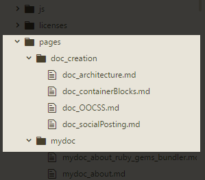
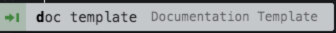

Getting Started
The Documentation Repository should be pulled from the NSN Documentation Git Repository and stored locally on your computer. Any IDE you use should have the ability to commit to Git any new documents or changes made to existing documents. The Atom IDE is made by Git and has excellent publishing capabilities and some great snippets have been created for Atom as well to help automate some of the documentation tasks. For these reasons, it is recommended that you use Atom as your documentation vehicle.

Folder Structure
All documents will be housed under the pages directory and depending on the functional area you are documenting or updating, the corresponding subfolder should be used to host the document.
Document requirements
Every document that gets created requires some metadata to be included. This is called ‘Front Matter’ (def: ‘the pages, such as the title page and preface, that precede the main text of a book.’) and is used by Jekyll to create files.
When creating a new page, you must include the Front Matter for the page to be rendered properly.
In Atom, if you have installed the custom snippets, you can simply type “fm” which will insert a Front Matter template automatically which will look like this:
---
title: Documentation Guide
keywords: documentation, guide, getting started, GDP, Atom
last_updated: Mar 09, 2018
tags: [documentation]
summary: "Good documentation practice (GDP) is a term to describe standards by which documents are created and maintained. Consistent documentation structure and an adherence to a common set of documentation guidelines will ensure the efficient publishing, consumption, and maintenance of a robust library of helpful information."
sidebar: product2_sidebar
permalink: documentationGuide.html
folder: product2
---
Alternatively, in Atom, you can type doc template  which will give you a complete starter document.